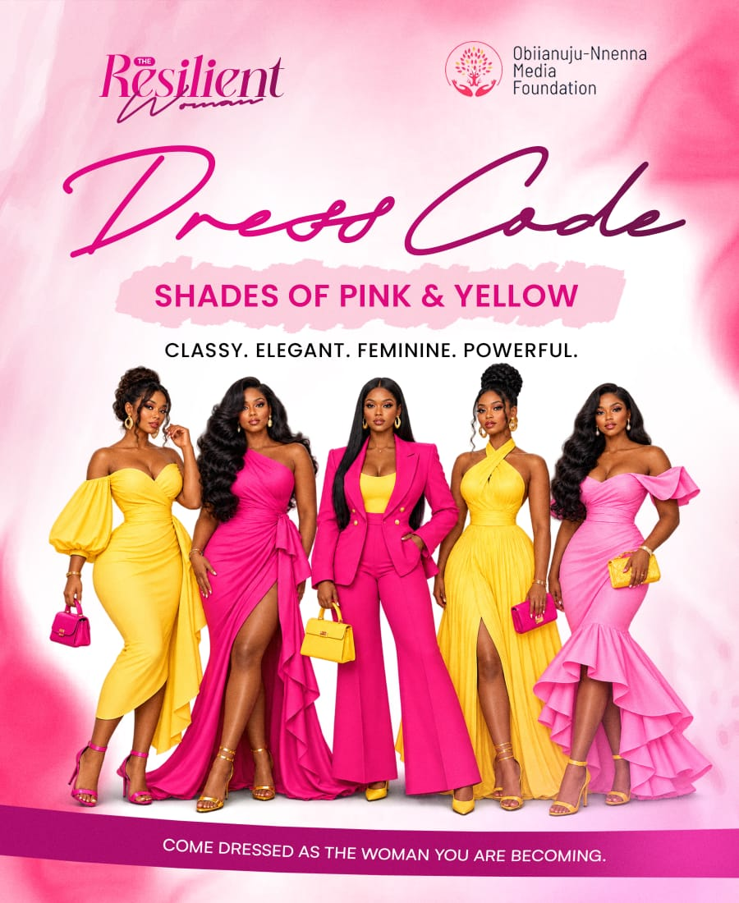

Day 1
Friday 30 October
Wholeness
Opening keynote, emotional wellness and preventive health, streamed live to phones and laptops across the country.
The 2026 edition has ended
Our flagship platform helping women live healthier, lead better and build sustainable lives, through the Conference, the Network and the Podcast. Thank you to everyone who joined us across three days of practical learning, honest conversation and real community.

The Resilient Woman Africa is the ONM Foundation's flagship women's empowerment platform, promoting wholeness, wellness, leadership and financial confidence through three things: the annual Conference, the Network that keeps women connected between editions, and the Podcast that carries the conversation further.
The 2026 conference ran across three days, built around Wholeness, Wealth and Wellbeing. Two virtual days opened it up to women anywhere in the world, and the third brought everyone together in Abuja. Planning for the 2027 edition is under way.
The first two days ran online, so women took part from wherever they were. The final day brought everyone together in Abuja.
Day 1
Wholeness
Opening keynote, emotional wellness and preventive health, streamed live to phones and laptops across the country.
Day 2
Wealth
Financial empowerment, business growth and digital skills with our finance and strategy facilitators, streamed live.
Day 3
Wellbeing
The day we gathered. Movement, wellness, the Experience Village, the Business Showcase and real conversation in one room.
Wuse 2, Abuja, Nigeria
Sunday 1 November 2026. The day ran from morning arrivals through to the community induction and group photograph that closed the conference.
The 2027 venue will be announced with the dates.
The keynote speakers and facilitators who joined us across the three days.
Swipe or use the arrows to meet the full line-up.
The 2027 line-up will be announced in due course. Follow @theresilientwomanafrica on Instagram and join our WhatsApp community for updates.
Interactive brand and wellness booths to explore between sessions.
On-site health checks and relaxation moments built into the day.
Structured connection time, because relationships outlast slides.
Women-owned businesses and vendors on full display.
Every attendee leaves with a curated take-home self-care kit.
Practical, workshop-style sessions rather than lecture-only panels.
Wholeness
Wealth
Wellbeing
| Time | Session |
|---|---|
| 8:00 AM | Arrival and welcome |
| 9:30 AM | Movement and fitness session |
| 11:00 AM | Wellbeing sessions, health and self care |
| 1:00 PM | Networking, Experience Village and Business Showcase |
| 3:00 PM | Closing keynote |
| 4:30 PM | Community induction and group photograph |
Session recordings and resources are shared with The Resilient Woman Network. Join the community below to access them.

Classy. Elegant. Feminine. Powerful.
On Sunday 1 November the room filled with pink and yellow, every shade, styled the way only each woman could. The room was part of the experience, and so was everyone in it.
Planning for the next edition is under way. Leave your details and we will tell you the dates, the venue and how to register before we announce them publicly.
Reach the team directly and we will start the conversation early.
Yes. It ran from Friday 30 October to Sunday 1 November 2026, with two virtual days and a final in person day at BodyRox Studio (Tuff House), Wuse 2, Abuja.
Dates are being planned now. Add your details to the form above and we will tell you the dates, venue and registration details before the public announcement.
Session recordings and resources are shared with The Resilient Woman Network. Join the community through the WhatsApp link below to access what has been released.
It is the year-round community behind the conference, where women connect, learn and support one another between editions. It is free to join and open to any woman.
We welcome proposals. Select "Speaking or facilitating" on the form above, or write to admin@onmfoundation.org with your area of expertise.
Sponsorship and vendor opportunities for 2027 open alongside registration. Write to admin@onmfoundation.org to be included early.
No. Admission to the 2026 conference was free for attendees and for vendors. Pricing for 2027 will be confirmed with the dates.
Join The Resilient Woman Network, free and open all year.